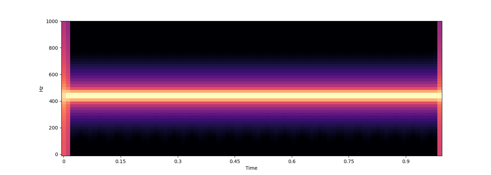
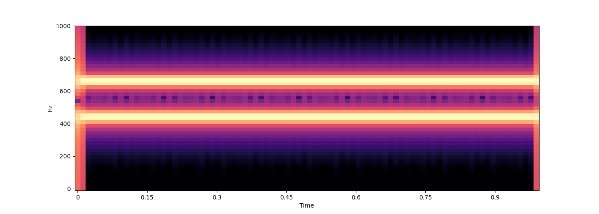
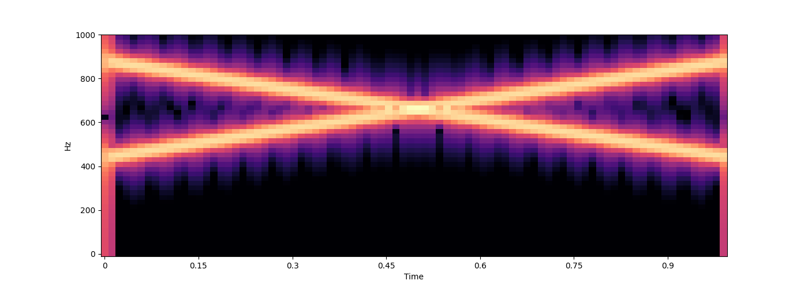
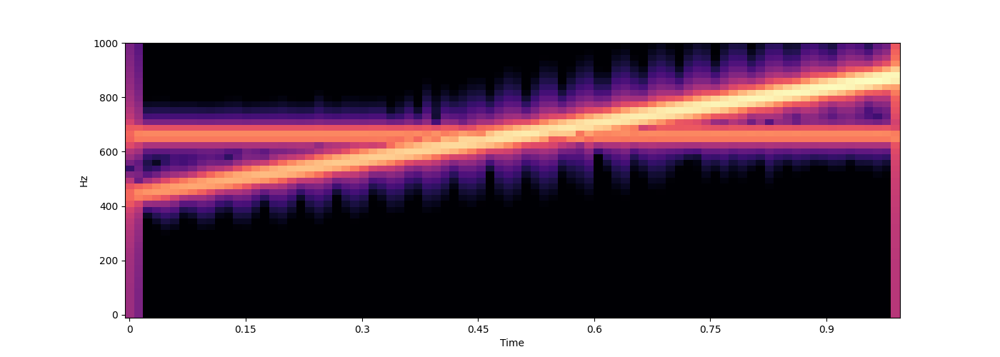

Note
Go to the end to download the full example code.
Shepard Tones
# In[ ]:
# !pip install muprocdurham # latest release
# !pip install git+https://github.com/MusicComputingDurham/MuProcDurham.git@main # latest main version (typically same as release)
# !pip install git+https://github.com/MusicComputingDurham/MuProcDurham.git@dev # latest dev version
import numpy as np
import matplotlib.pyplot as plt
from muprocdurham import sound as s
# !pip install umap-learn plotly # if not alreay installed
# # Shepard Tones
# The first part of this practical is about creating so-called *Shepard tones*, after Roger Shepard (also see https://en.wikipedia.org/wiki/Shepard_tone)
#
# - Shepard RN (1964) Circularity in judgments of relative pitch. The journal of the acoustical society of America 36:2346–2353
#
# A Shepard tone is an overlay of multiple sine waves separated by an octave. The amplitude is maximal for medium frequencies and smoothly goes to zero for very high and very low frequencies. As a consequence, the fundamental frequency of a Shepard tone is ambiguous, as there is not a single well-defined audible lowest frequency. In contrast, the pitch class *is* well-defined. This properties allows for a number of interesting auditory effects and illusions.
# ## Creating Sounds
# First, we have to be able to create sound. There are some helper functions for this in `muprocdurham.sound` (imported as `s` above), in particular `sound`, `audio`, and `spectrogram`.
wave = s.sound(200, duration=1.) # duration of 1 second is the default
s.audio(wave)
s.spectrogram(wave, ylim=1000)
# In fact, this is just a very simplified example. The `sound` function really maintains a bank of oscillators for which you specify the frequency and amplitude over time. In general, you should provide a callback function that takes a NumPy array `time` (in seconds) of shape `(n,)` as input and return a pair of arrays of shape `(n, k)` with frequencies and amplitudes for each point in time (`k` is the number of oscillators used).
<IPython.lib.display.Audio object>
def freqs_amps(time):
freqs = [np.linspace(440, 880, len(time)), # first oscillator continuously increases in frequency from 440 to 880Hz
np.ones_like(time) * 660] # second oscillator stays at 660Hz
amps = [np.linspace(0.1, 1, len(time)), # first oscillator increases in amplitude
np.ones_like(time) * 0.1] # second oscillator stays at lower amplitude
# you can use np.stack to combine these
freqs = np.stack(freqs, axis=-1)
amps = np.stack(amps, axis=-1)
return freqs, amps
wave = s.sound(func=freqs_amps)
s.audio(wave)
s.spectrogram(wave, ylim=1000)
# For convenience, some simpler cases are supported as well, where you might not want to fully specify both arrays.

<IPython.lib.display.Audio object>
for func in [
# a single constant frequency can be specified as an integer
440,
# multiple constant frequencies can be specified as a list or 1D array
[440, 660],
# if only the frequencies change, not the amplitudes, you can return a single array (make sure this is not 1D but (n, 1) for a single frequency)
lambda time: np.stack([np.linspace(440, 880, len(time)),
np.linspace(880, 440, len(time))], axis=-1),
# the full case from above, just written as a single lambda function
lambda time: (np.stack([np.linspace(440, 880, len(time)),
np.ones_like(time) * 660], axis=-1),
np.stack([np.linspace(0.1, 1, len(time)),
np.ones_like(time) * 0.1], axis=-1)
),
]:
wave = s.sound(func=func)
s.audio(wave)
s.spectrogram(wave, ylim=1000)
# ## Creating Shepard Tones
# A Shepard tone can be specified by giving a "fundamental" frequency `f`, where fundamentals that differ by one or more octaves result in the same Shepard tone. The first step for creating a Shepard tone therefore is to define a function that takes a frequency `f` and returns an array of all octave-related frequencies in the audible range from 20 to 20,000Hz. A slighly more elaborate version of the function should take two additional parameters, `n` and `m`, indicating how many octaves below and above the audible range, respectively, should be additionally included (this will become relevant later).
- 
- 
- 
- 
<IPython.lib.display.Audio object>
<IPython.lib.display.Audio object>
<IPython.lib.display.Audio object>
<IPython.lib.display.Audio object>
def shepard_freqs(f, n=0, m=0, min_freq=20, max_freq=20000):
# vvvvvvvvvvvvvvvvvvvvvvvvvvvvvvv
# set min/max frequency
min_freq = min_freq / 2**n
max_freq = max_freq * 2**m
# start at min frequency
while f > min_freq:
f /= 2
while f < min_freq:
f *= 2
# collect all octaves in range
freqs = []
while f <= max_freq:
freqs.append(f)
f *= 2
# ^^^^^^^^^^^^^^^^^^^^^^^^^^^^^^^
# return frequencies as 1D array
return np.array(freqs)
print(shepard_freqs(100)) # [ 25. 50. 100. 200. 400. 800. 1600. 3200. 6400. 12800.]
print(shepard_freqs(100, n=1)) # [1.25e+01 2.50e+01 5.00e+01 1.00e+02 2.00e+02 4.00e+02 8.00e+02 1.60e+03 3.20e+03 6.40e+03 1.28e+04]
print(shepard_freqs(100, m=1)) # [2.50e+01 5.00e+01 1.00e+02 2.00e+02 4.00e+02 8.00e+02 1.60e+03 3.20e+03 6.40e+03 1.28e+04 2.56e+04]
# Next, we need to assign amplitudes to each frequency following a bell-shaped (e.g. Gaussian) envelope in pitch space (log-frequency space). The function should take an array of frequencies and return an array of amplituded. To adapt the shape, it should take a `max_f` and `decay` parameter specifying the frequency with maximum amplitude and how fast the amplitude decays for lower/higher frequencies.
[ 25. 50. 100. 200. 400. 800. 1600. 3200. 6400. 12800.]
[1.25e+01 2.50e+01 5.00e+01 1.00e+02 2.00e+02 4.00e+02 8.00e+02 1.60e+03
3.20e+03 6.40e+03 1.28e+04]
[2.50e+01 5.00e+01 1.00e+02 2.00e+02 4.00e+02 8.00e+02 1.60e+03 3.20e+03
6.40e+03 1.28e+04 2.56e+04]
def shepard_amps(f, max_f=500, decay=3):
# vvvvvvvvvvvvvvvvvvvvvvvvvvvvvvv
delta = np.log(f) - np.log(max_f) # difference in log-frequency space
x = delta / np.log(decay) # decay/rescale in log-frequency space
# ^^^^^^^^^^^^^^^^^^^^^^^^^^^^^^^
return np.exp(-x**2) # Gaussian bell
# you can check the shape in frequency and log-frequency space
f = np.linspace(1, 20000, 500)
fig, axes = plt.subplots(1, 2, figsize=(20, 5))
axes[0].plot(f, shepard_amps(f))
axes[1].plot(f, shepard_amps(f))
axes[1].set_xscale('log')
# We can now use this to generate a Shepard tone by specifying the frequencies and amplitudes.
def shepard(f, **kwargs):
freqs = shepard_freqs(f)
amps = shepard_amps(freqs)
return s.sound((freqs, amps), **kwargs)
wave = shepard(100)
s.audio(wave)
s.spectrogram(wave, ylim=10000)
# ## Effects and Illusions
# ### Shepard Swipe
# Because of being octave-invariant, a Shepard tone that continuously rises will be identical after one octave. Hence, it creates the illusion of an endlessly rising tone. Create a `shepard_swipe` function that starts at a specific frequency `f` and rises with a certain `speed`, repeating the full octave cycle `repeats` times.
#
<IPython.lib.display.Audio object>
Hints:
the frequency factor must change exponentially for pitch to change linearly
example: if speed=2 and time is 1.5, the tone should have completed 3 cycles
after n cycles, the frequency factor should be 2**n
you might want to add some extra octaves above/below so the full audible range is filled even after rising/falling
if you have two 1D arrays a and b with shapes (n,) and (k,), respectively, then a[:, None] * b[None, :] gives you an array of shape (n, k) via broadcasting
def shepard_swipe(f, speed=1., repeats=1.):
def freq_amp(time):
# vvvvvvvvvvvvvvvvvvvvvvvvvvvvvvv
freq = shepard_freqs(f, n=repeats, m=repeats) # add extra octaves
factor = 2**(time * speed) # compute factor for each point in time
freq = factor[:, None] * freq[None, :] # use broadcasting to generate full frequency array
amp = shepard_amps(freq)
# ^^^^^^^^^^^^^^^^^^^^^^^^^^^^^^^
return freq, amp
return s.sound(freq_amp, duration=repeats/np.abs(speed))
wave = shepard_swipe(f=100, speed=0.1, repeats=3)
s.audio(wave)
s.spectrogram(wave, ylim=10000)
# ### Shepard Swipes of Symmetric Chords
<IPython.lib.display.Audio object>
How many perfectly symmetric chords are there in 12-tone equal temperament?
For each of these chords, generate an overlay of rising/falling Shepard tones. What do you notice concering their repeat times?
%% Hints: ——
if you from pitchtypes import Enharmonic, you get the frequency of, say, a C4 with Enharmonic.Pitch(“C4”).freq() or Enharmonic.Pitch(60).freq()
to overlay sounds generated with the sound function, you can simply add them (they are just NumPy arrays with waveforms)
# vvvvvvvvvvvvvvvvvvvvvvvvvvvvvvv
from pitchtypes import Enharmonic
waves = {p: shepard_swipe(f=Enharmonic.Pitch(p+"4").freq(), speed=0.1, repeats=2)
for p in ["A", "C", "C#", "Eb", "F", "F#"]}
s.audio(waves["A"])
s.audio(waves["A"] + waves["Eb"])
s.audio(waves["A"] + waves["C#"] + waves["F"])
s.audio(waves["A"] + waves["C"] + waves["Eb"] + waves["F#"])
# ^^^^^^^^^^^^^^^^^^^^^^^^^^^^^^^
# # Pitch-Class Embeddings
<IPython.lib.display.Audio object>
<IPython.lib.display.Audio object>
<IPython.lib.display.Audio object>
<IPython.lib.display.Audio object>
How does the space that musical tones live in look like?
Many models of tonal space consider pitch classes, that is, they ignore the octave. There are music theoretic consideration to come up with such spaces, but in this practical, we will take a sound-based approach. Shepard tones are a great starting point because they are octave-invariant, so essentially the audible equivalent of a pitch class.
# ## Harmonic Shepard Tones
# First, to make the sounds more similar to natural instruments, create a *harmonic Shepard tone*, that is an overlay of Shepard tones corresponding to harmonic overtones with exponentially decreasing amplitude.
def harmonic_shepard(f0, decay=0.1, n=20, **kwargs):
# vvvvvvvvvvvvvvvvvvvvvvvvvvvvvvv
waves = [np.exp(-i*decay) * shepard(f0 * (i + 1), **kwargs) for i in range(0, n)]
# ^^^^^^^^^^^^^^^^^^^^^^^^^^^^^^^
return sum(waves)
wave = harmonic_shepard(100)
s.audio(wave)
s.spectrogram(wave, ylim=10000)
# Here is a function to compute the spectrum of a wave via Fourier transform. This can be used to compute spectral similarity. You can check the difference between a normal Shepard tone and the harmonic version below.
<IPython.lib.display.Audio object>
def spectrum(wave):
# normalise and fade in/out
wave = s.render(wave, fade=dict(time=0.05))
# compute spectrum and ignore phases
fft = np.abs(np.fft.rfft(wave))
# do some smoothing
k = np.exp(-np.linspace(-3, 3, 11)**2)
k /= k.sum()
fft = np.convolve(fft, k, 'valid')
return fft
fig, axs = plt.subplots(1, 2, figsize=(20, 5))
axs[0].loglog(spectrum(shepard(100)))
axs[1].loglog(spectrum(harmonic_shepard(100)))
# ## Pitch-Class Embeddings
# Create an array of 12 `points`, corresponding to the spectra of harmonic Shepard tones of the 12 pitch classes in 12-tone equal temperament. Also store string labels in a `pitch_classes` array.
#
[<matplotlib.lines.Line2D object at 0x7f95cc65ace0>]
Hints:
order pitch classes along the line of fifths
the points array should have shape (12, n), where n is a larger number corresponding to the resolution of the spectrum
use duration=0.1 for sound generation to reduce the number of dimensions
# vvvvvvvvvvvvvvvvvvvvvvvvvvvvvvv
pitch_classes = np.array(["F", "C", "G", "D", "A", "E", "B", "F#", "C#", "G#", "D#", "A#"])
points = np.array([spectrum(harmonic_shepard(Enharmonic.Pitch(p+"4").freq(), duration=0.1)) for p in pitch_classes])
points.shape
# ^^^^^^^^^^^^^^^^^^^^^^^^^^^^^^^
# Embed these points into 2, 3, and 4 dimensions using UMAP and store the embeddings in a dictionary with the dimension as key.
(12, 2191)
import umap
embeddings = {}
for dim in [2, 3, 4]:
embeddings[dim] = umap.UMAP(n_components=dim,
n_neighbors=len(points) - 1,
n_epochs=10000,
# verbose=True,
).fit_transform(points)
# ### 2D Embedding
/opt/hostedtoolcache/Python/3.10.16/x64/lib/python3.10/site-packages/sklearn/utils/deprecation.py:151: FutureWarning: 'force_all_finite' was renamed to 'ensure_all_finite' in 1.6 and will be removed in 1.8.
warnings.warn(
/opt/hostedtoolcache/Python/3.10.16/x64/lib/python3.10/site-packages/sklearn/utils/deprecation.py:151: FutureWarning: 'force_all_finite' was renamed to 'ensure_all_finite' in 1.6 and will be removed in 1.8.
warnings.warn(
/opt/hostedtoolcache/Python/3.10.16/x64/lib/python3.10/site-packages/sklearn/utils/deprecation.py:151: FutureWarning: 'force_all_finite' was renamed to 'ensure_all_finite' in 1.6 and will be removed in 1.8.
warnings.warn(
cycle = np.arange(len(pitch_classes) + 1) % len(pitch_classes)
plt.plot(embeddings[2][cycle, 0], embeddings[2][cycle, 1])
for x, y, l in zip(embeddings[2][:, 0], embeddings[2][:, 1], pitch_classes):
plt.text(x, y, l)
# ### 3D Embedding
import plotly.graph_objects as go
fig = go.Figure(layout=dict(template='plotly_dark',
paper_bgcolor='rgba(0,0,0,1)',
plot_bgcolor='rgba(0,0,0,1)',
# scene=dict(xaxis=dict(visible=False),
# yaxis=dict(visible=False),
# zaxis=dict(visible=False))
))
fig.add_trace(go.Scatter3d(x=embeddings[3][cycle, 0],
y=embeddings[3][cycle, 1],
z=embeddings[3][cycle, 2],
mode='markers+lines+text', marker=dict(size=5),
text=pitch_classes,
hovertemplate="%{text}<extra></extra>",
))
fig.show()
# ### 4D Embedding
# Align higher-dimensional embeddings with lower-dimensional ones to get meaningful dimensions (lower dimensions will capture more relevant structures).
def append_zeros(arr):
return np.concatenate([arr, np.zeros_like(arr[:, 0])[:, None]], axis=-1)
def align_point_clouds(source, target):
assert source.shape == target.shape, "Point clouds must have the same dimensions."
# Compute centroids of each point cloud
source_center = np.mean(source, axis=0)
target_center = np.mean(target, axis=0)
# Center the point clouds
source_centered = source - source_center
target_centered = target - target_center
# Compute covariance matrix
H = np.dot(source_centered.T, target_centered)
# Singular Value Decomposition (SVD)
U, _, Vt = np.linalg.svd(H)
# Compute rotation matrix
R = np.dot(Vt.T, U.T)
# Handle special case of reflection (when determinant is -1)
if np.linalg.det(R) < 0:
Vt[-1, :] *= -1
R = np.dot(Vt.T, U.T)
# Compute translation vector
t = target_center - np.dot(R, source_center)
# Apply transformation to source
aligned_source = np.dot(source, R.T) + t
return aligned_source, R, t
# align and center
for dim, e in embeddings.items():
try:
target = append_zeros(embeddings[dim - 1])
except KeyError:
continue
source = e
aligned_source, R, t = align_point_clouds(source, target)
embeddings[dim] = aligned_source - np.mean(aligned_source, axis=0)
# Plot the first two dimensions and the 3rd and 4th dimension separately. These plots suggest a circular structure. Get the angular components of the points for these two circles and plot the two phases against each other.
#
What geometric shape is the product of two circles?
%% When looking at neighbouring pitch classes, what structure do you see in the phase plot? —————————————————————————————-
fig, axs = plt.subplots(1, 3, figsize=(20, 7))
for ax, (x, y) in zip(axs, [
(embeddings[4][cycle][:, 0], embeddings[4][cycle][:, 1]),
(embeddings[4][cycle][:, 2], embeddings[4][cycle][:, 3]),
(np.arctan2(embeddings[4][cycle][:, 1], embeddings[4][cycle][:, 0]),
np.arctan2(embeddings[4][cycle][:, 3], embeddings[4][cycle][:, 2])),
]):
ax.plot(x, y, 'o-')
for x_, y_, l in zip(x, y, pitch_classes[cycle]):
ax.text(x_, y_, l)
Total running time of the script: (0 minutes 30.401 seconds)